Here is a cheatsheet that shows you many of the commands that can be used with ggplot
There are several different kinds of layers one can add to their ggplot. One could add points, labels, shapes, geometries and more. When adding these layers, there are certain ideas you want ggplot to use. You may want to make sure all of the points are blue, or that a line is red. When you are describing what you want each layer to do you are talking about the aesthetics of that layer.
Before we start looking at some of the many ways one can bedazzle one of their visualizations, we should have a discussion on what the term aesthetics means, as well as how and when ggplot uses them.
Aesthetics
Aesthetics basically describe what you are going to see on the graph. The very first aesthetic you will need to use is when you initially call ggplot :
ggplot( Dataset, aes(x, y))
The first argument you will give ggplot is the data set you want to use. The aesthetics in this command label which variable will be used on the x-axis and which will be used on the y-axis. Any aesthetics that are listed at this level will be used as the default for the rest of the visualization.
For this section we will be creating many different examples using the mtcars built in data set. Here is a quick summary of the data.
# Take a quick peek at the data set mtcarshead(mtcars)
We can use the help file to give us a better understanding of the data set :
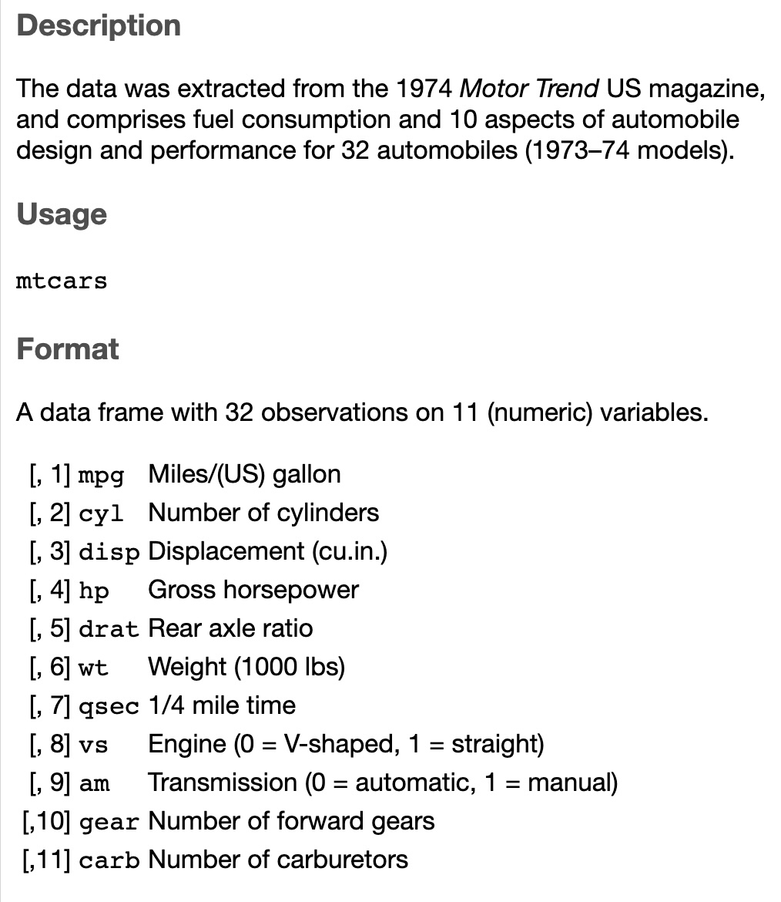
After reading the description of the variables, suppose we are interested in the relationship between the weight (wt) of the car and the miles per gallon (mpg) for the car. The traditional concept is that if a car is heavier it will need more gas to move the car, so heavier cars will use more gas giving them a lower mpg.
We can investigate this with a quick scatterplot. We are saying that the weight is affecting the miles per gallon so we will use wt as the explanatory variable (x-axis) and mpg as the response variable (y-axis). Here is the basic command in R:
So far we have set up the canvas for the plot. For this canvas layer, when we add conditions to the `aes( )`` portion, we are giving instructions for all subsequent layers to use. These aesthetics are used as defaults for each subsequent layer. Usually this layer will give the explanatory and response variable. There are some other options that you can explore but we will just use this for now.
The next step is to add some type of geometry to show the data. There are several types of geometries one could add to the visualization.
geom_point() for scatterplots, dot plots, etc
geom_line() for adding a line to the plot
geom_histogram() for adding a histogram
There are several more that you can check out on the cheatsheet or through other sources.
For this example, let’s just add some basic points to the graph.
ggplot(mtcars, aes(x=wt, y=mpg)) +geom_point()
There could be instances where you need to adjust the values of the variables. For instance, what if we wanted to transform these data points to the metric system? We would need to change miles to kilometers by multiplying the miles by 1.60934 and change the weight to kilograms by multiplying the weight by 0.453.
We obviously need to work on the labels for the previous graph! You can see how to do this in previous sections and examples.
We are now ready to add some other aesthetics to the graph to pretty this up!
geom_point( )
The first geometry we will discuss is the one we used above. What we want to do is change the presentation of the points on the scatterplot. There are several modifications that we can make. Here are the aesthetics we can use for geom_point( ):
There are too many ways to show you an exhaustive list on the different types and combinations you could make with your visualization. Here you will be presented with many different examples showing a few of the ways these aesthetics could be used.
We have already discussed some of the coloring options, so let’s talk about some of the different shapes that could be used.
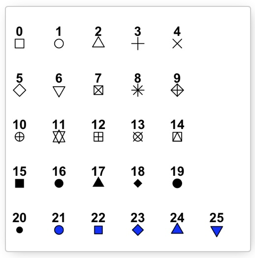
# Example where we change the shape, size, and color of the points# The default size is 0.5 (diameter)ggplot(mtcars, aes(wt, mpg)) +geom_point(shape=18, size=5, color="blue")
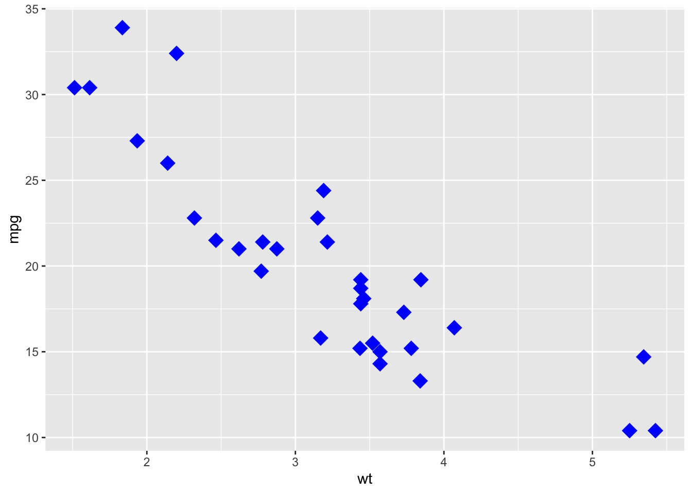
Look at the chart above showing the different shapes and consider shape 23. This looks like it is a blue diamond, but it represents a diamond filled with a color. If we wished, we could change the color of the diamond.
Notice that the diamond is has a black outline. We could change the color of the outline as well as how thick that line is. This outline is called the stroke. You can think of it is how wide is the stroke of the pen that is making the shapes.
We can also see that some of the points are overlapping each other. That can sometimes be confusing. As we saw in a previous sectino we can make the points more transparent. This is called chaning the alpha level of the points. The alpha level needs to be between 0 and 1 where 0 is completely transparent and 1 is no transparency.
The way you can read this is that the darker portions of the graph have more overlap than the lighter portions.
We could also group the points together based on another variable. For instance, the number of cylinders a car reflects the size of the engine. So a car with more cylinders (cyl) usually weights more than a car with less cylinders. We can change the color of the points using the number of cylinders as our grouping. We will make this grouping a default for the entire graph, so that means we will add the new condition to the original ggplot( ) call.
# For this type of example, we want the cylinders to be used as factors to # determine the different shapes. They will be automatically given a shape and# a key will appear to show you the mapping.ggplot(mtcars, aes(x=wt, y=mpg, group=cyl)) +geom_point(aes(shape=factor(cyl)))
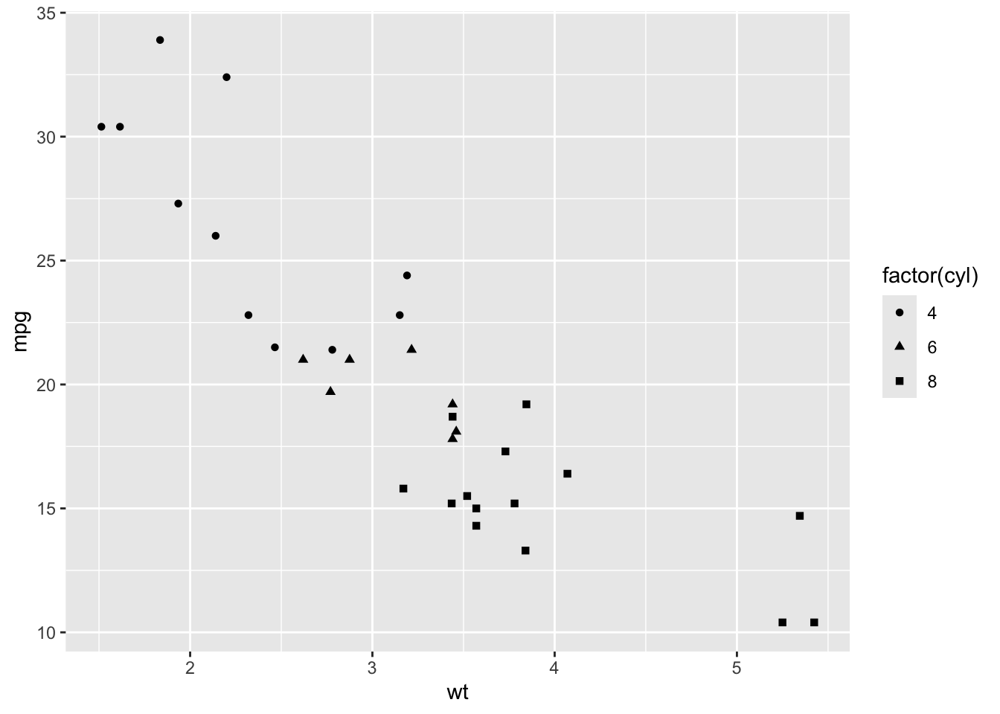
In order for this to stand out, we could also change the color of each group:
# Add color as a factor for the cylinders.ggplot(mtcars, aes(x=wt, y=mpg, group=cyl)) +geom_point(aes(shape=factor(cyl), color=factor(cyl)))
If we are feeling really sassy, we could change the size based on the number of cylinders that are in a car.
We could also change these values manually if we do not like the defaults. We can use the following functions:
scale_shape_manual( ) - this changes the shapes
scale_color_manual( ) - this changes the colors
scale_size_manual( ) - this changes the size
In this example, we are working with the cylinder size. There are three values for this variable. If we want to change these manually, make sure that you have a value for each of these three factor levels.
We will create a vector describing which values we want to use. For example, if I want to use the shapes 3, 16, and 17 from the chart above, I would create a vector with this three variables and use it in the scale_shape_manual( ) command:
scale_shape_manual(values=c(3, 16, 17))
We would do something similar for other choices.
# We can also change where the legend is positioned in our visualizationggplot(mtcars, aes(x=wt, y=mpg, group=cyl)) +geom_point(aes(shape=factor(cyl),color=factor(cyl), size=2))+scale_shape_manual(values=c(3, 16, 17)) +scale_color_manual(values=c('#999999', '#E69F00', '#56B4E9')) +theme(legend.position="top")
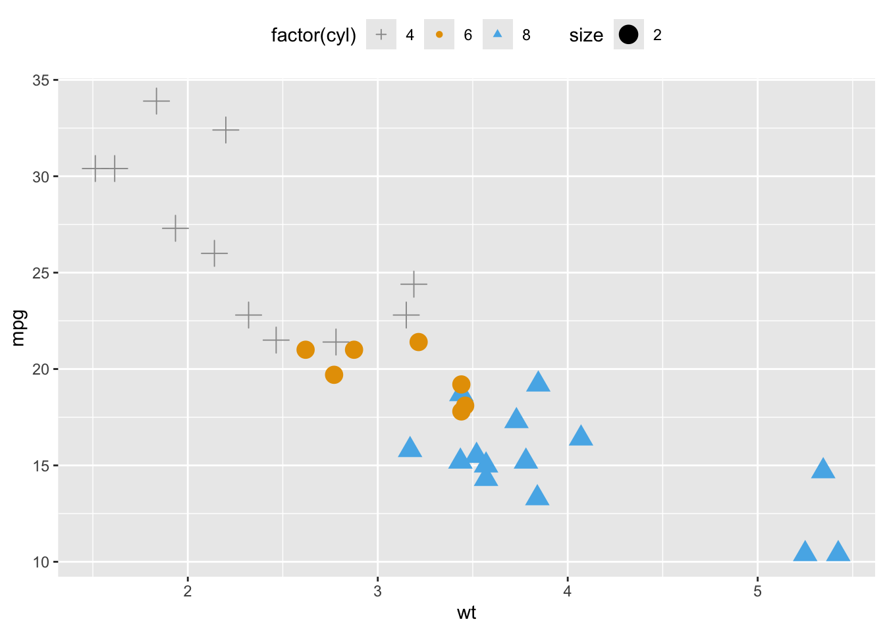
Faceting
There are times when we have a large data set and plotting all of the points together is not a useful visualization. We could create a single graphic one variable at a time, or we could create what is called a facet. A facet is the process that will take a single plot and break it up into smaller subplots. This will create a grid with each of the smaller plots for easy comparison between the variables.
To help with this, let’s use the gapminder.csv data set. This data set can be found on our Github repository. Here is a brief description of the data set.
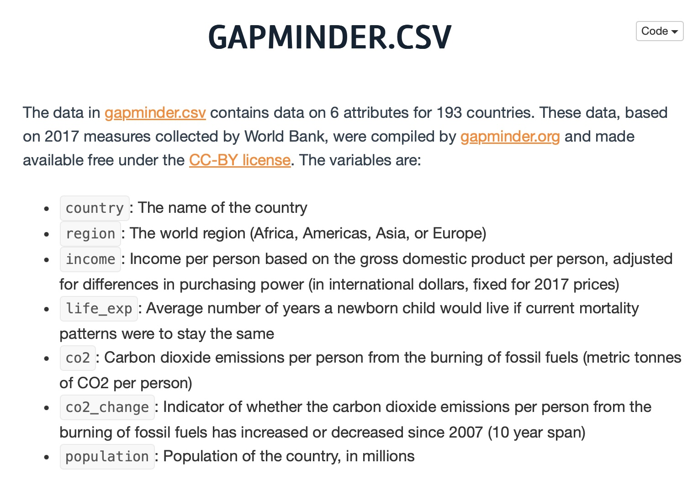
# Make sure we have the libary loaded that uses read_csvlibrary(readr)# Read the data set into "gapdata"gapdata <-read_csv("./gapminder.csv")# Look at the first few lines of the datahead(gapdata)
# A tibble: 6 × 6
country continent year lifeExp pop gdpPercap
<chr> <chr> <dbl> <dbl> <dbl> <dbl>
1 Afghanistan Asia 1952 28.8 8425333 779.
2 Afghanistan Asia 1957 30.3 9240934 821.
3 Afghanistan Asia 1962 32.0 10267083 853.
4 Afghanistan Asia 1967 34.0 11537966 836.
5 Afghanistan Asia 1972 36.1 13079460 740.
6 Afghanistan Asia 1977 38.4 14880372 786.
Let’s take a quick look at the relationship between x = gpdPercap and y = lifeExp.
If we were to describe this scatterplot we would say
form : nonlinear (logarithmic)
direction : positive
strength : fairly strong
There is definitely a pattern here, so we would say the strength is strong, but we could also note that the linear strength would be weak. The pattern is nonlinear and looks to follow an logarithmic pattern and the association has a positive direction.
If we wanted to consider the data set by the continent, we could do what we just learned about to color the points by their continent.
While the colors look nice, this is just a jumbled mess. What we could do is change how we view this graph. Since this shape is logarithmic, we should be able to use the scale_x_log10( ) option. If the shape is logarithmic, this command transforms the points into a plt that should look more linear.
This makes the graph a little easier to read, but it is still a jumbled mess. What we need to do is create a facet so we can see the subplots of each continent individually. The command facet_wrap( ) tries to sensibly wrap a series of facets using smaller subplots. We can give it the directions on how to set up the facet. Fos this example, we want a facet by continent so we will add :
Using this visualization, it is now much easier to compare the continents. You can see that the population on Oceania has much less variation in their GDP Per Capita and life expectancy when compared to Asia. By taking the plot and creating these facets, it was mich easier to interpret the data and find a better story the data is trying to tell us.
Saving Scatterplots
After you have been working with the data and options to create the perfect scatterplot, you awnt to save it so you can use it anytime you want. You can save the plot to some file format on your computer. You could then upload the graph to a Google Doc, Word file, etc.. You can also save the size, set the width or height, and more.
# We need to recreate the plot and save it to a variable. Let's call it "pfinal"pfinal <-ggplot(gapdata, aes(x=gdpPercap, y=lifeExp)) +geom_point(aes(colour=continent)) +scale_x_log10() +facet_wrap(~continent, ncol=1) # We can now save this to our computer. Let's call the file saved on the # computer "myplot.pdf"ggsave(pfinal, file="myplot.pdf", width=5, height=15)
This is now in my working directory :
And here is my new PDF :
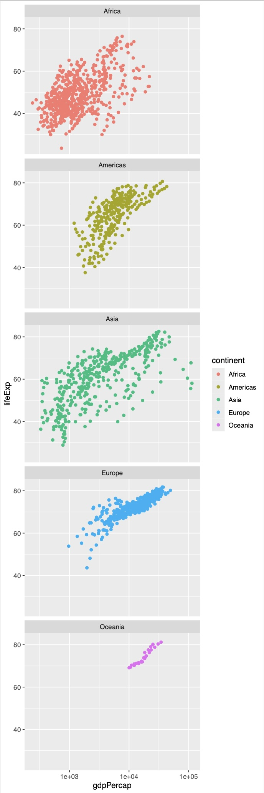
Conclusion
While we have gone over a lot of ways to customize a scatterplot, we really have barely scratched the surface for all we can do. Feel free to play around with other options and other geometries to see what else you can create.
One final note is to make sure that the substance of the visualization is more important than the style of the visualization. You don’t want you picture to be so flashy that the story you are trying to tell gets lost. These customization be very beneficial, just don’t over do it!
Exercises
Problem 1: Custom Colors and Shapes
Use the iris dataset to create a scatterplot of Sepal.Length vs. Sepal.Width. Change the color of the points based on Species and use different shapes for each species.
# Solutionlibrary(ggplot2)ggplot(iris, aes(x = Sepal.Length, y = Sepal.Width, color = Species, shape = Species)) +geom_point()
Problem 2: Size and Alpha Levels
Use the iris dataset to create a scatterplot of Sepal.Length vs. Petal.Length. Change the size of the points based on Petal.Width and set the alpha level to 0.6.
Use the iris dataset to create a scatterplot of Petal.Length vs. Petal.Width. Change the fill color of the points based on Species and add a black border (stroke) to the points.
# Solutionggplot(iris, aes(x = Petal.Length, y = Petal.Width, fill = Species)) +geom_point(shape =21, color ="black")
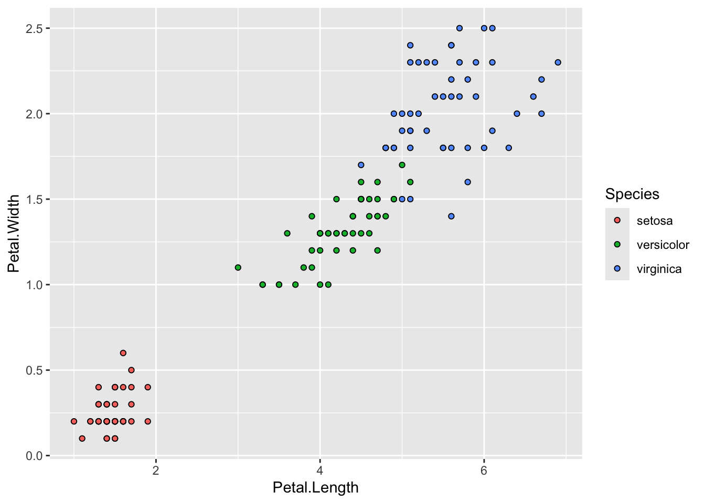
Problem 4: Faceted Scatterplot (Single Variable)
Use the iris dataset to create a scatterplot of Sepal.Length vs. Sepal.Width. Facet the plot by Species.
Problem 5: Faceted Scatterplot (Multiple Variables)
Use the iris dataset to create a scatterplot of Petal.Length vs. Petal.Width. Facet the plot by Species and include a different color for each species.
# Solutionggplot(iris, aes(x = Petal.Length, y = Petal.Width, color = Species)) +geom_point() +facet_grid(~ Species)
Problem 6: Log Scale
Use the diamonds dataset to create a scatterplot of carat vs. price. Apply a log scale to the y-axis.
# Solutionggplot(diamonds, aes(x = carat, y = price)) +geom_point() +scale_y_log10()
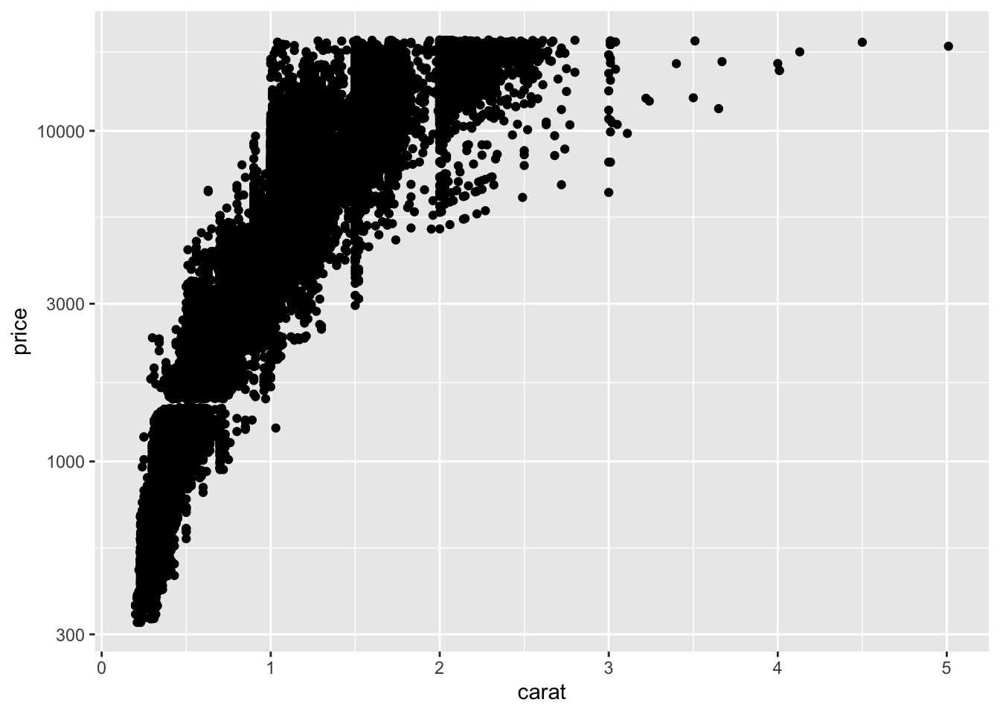
Problem 7: Custom Colors and Alpha
Use the diamonds dataset to create a scatterplot of carat vs. price. Change the color of the points based on clarity and set the alpha level to 0.5.
# Solutionggplot(diamonds, aes(x = carat, y = price, color = clarity)) +geom_point(alpha =0.5)
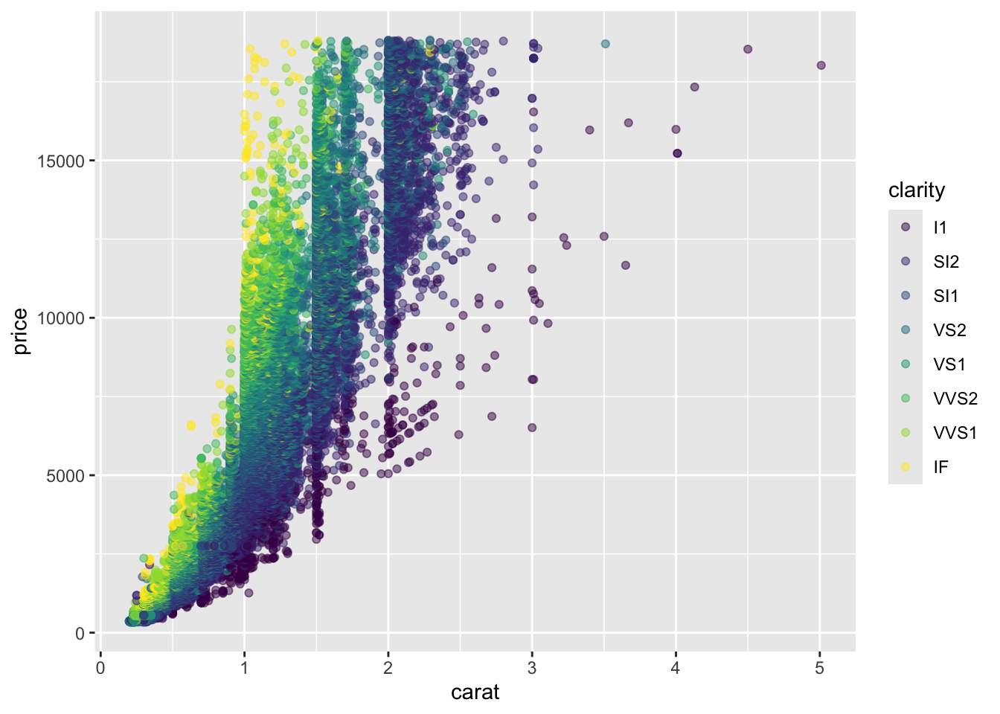
Problem 8: Size and Shape
Use the ToothGrowth dataset to create a scatterplot of len vs. dose. Change the size of the points based on supp and use different shapes for each supplement type.
Warning: Using size for a discrete variable is not advised.
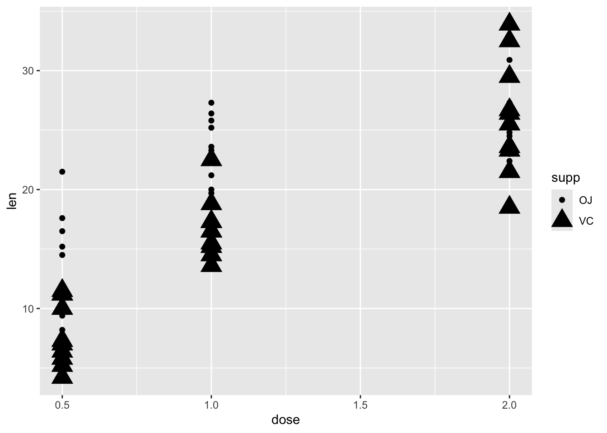
Problem 9: Faceted Scatterplot with Custom Colors
Use the ToothGrowth dataset to create a scatterplot of len vs. dose. Facet the plot by supp and change the color of the points based on dose.
# Solutionggplot(ToothGrowth, aes(x = dose, y = len, color =factor(dose))) +geom_point() +facet_wrap(~ supp)
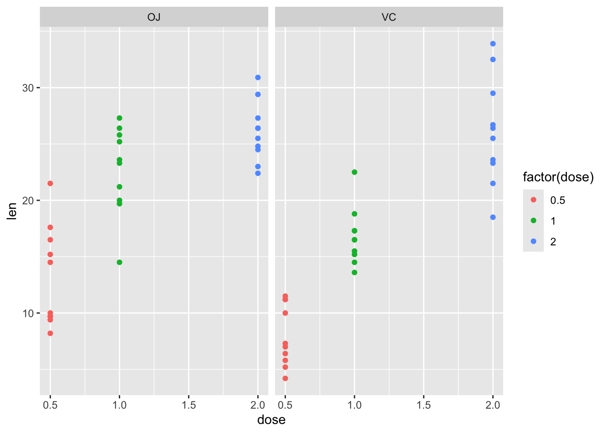
Problem 10: Fill, Size, and Alpha
Use the ChickWeight dataset to create a scatterplot of Time vs. weight. Change the fill color of the points based on Diet, the size of the points based on Chick, and set the alpha level to 0.7.
# Solutionggplot(ChickWeight, aes(x = Time, y = weight, fill =factor(Diet), size = Chick)) +geom_point(shape =21, alpha =0.7)